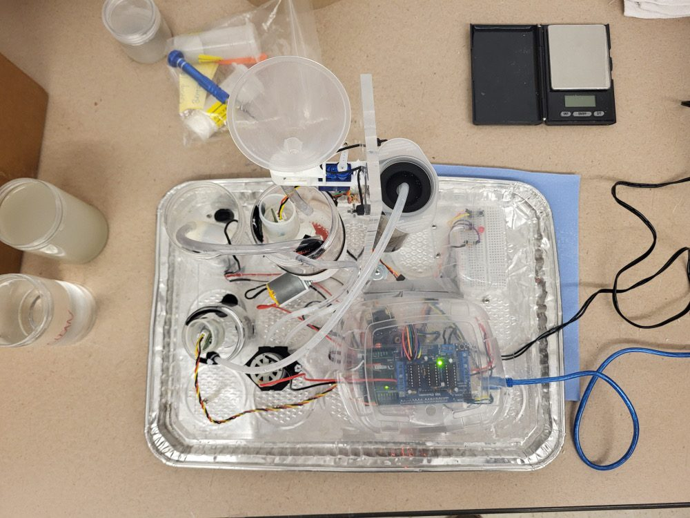
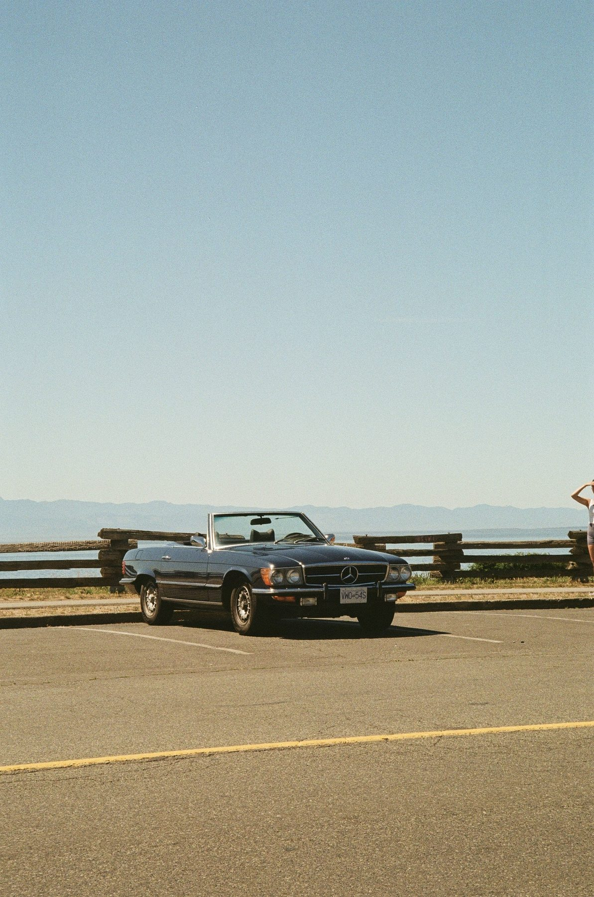
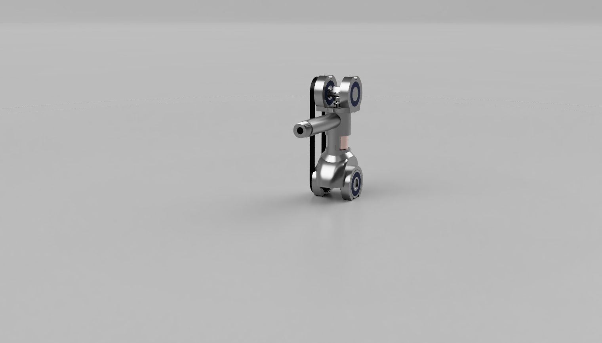
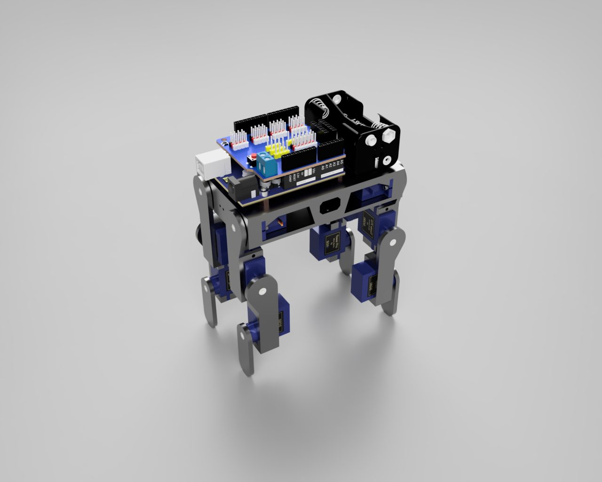
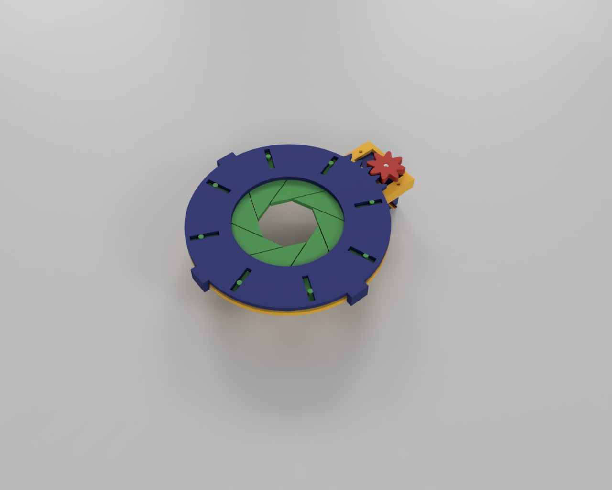
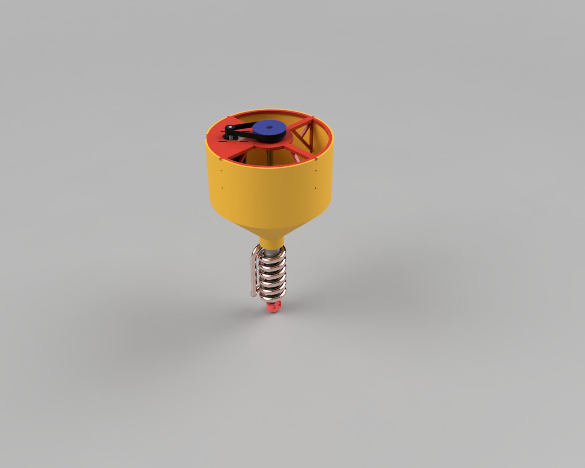

Gavin Bayley
I build robots end-to-end — mechanical design, embedded firmware, and the software stacks that tie them together. Recent work spans human-robot interaction research, autonomous navigation, and a long list of things I've designed, 3D printed, wired, and restored.
LLM-Driven Mental Health Companion Robot
Undergraduate Research Assistant — MITHRIL Lab
Designed, fabricated, and programmed a tendon-driven, continuum-stem animatronic flower robot from the ground up, serving as the physical embodiment for an LLM-driven mental health companion research platform in the lab's Human-Robot Interaction research program.
Design & Build
Autonomous Differential-Drive SLAM Robot
Differential-drive mobile robot with LiDAR SLAM, Nav2 navigation, and a custom feedforward + PID motor controller. Full write-up in progress.

Three-Link Motion Tracking Arm
Modular, 3D-printed ball-and-socket arm that tracks the real-time location of each link and end-effector using a 9DOF IMU per joint.

FPV Quadcopter & Custom Controller
Ground-up design, fabrication, and programming of a quadcopter and its custom RF controller, with a PID + feedforward control loop and a custom PCB.

Scale Water Treatment System
Designed the dispensing assembly for an automated water treatment system under a strict material budget; became the standard reference for later classes.

Car Restoration
Restored two of three oceanfront-abandoned classics to safe driving condition, including a full hydraulic braking/suspension rebuild.

Pneumatic Engine
Designed and built a pneumatic engine, engineering the piston-crank kinematics and solving synchronization failures with a gear-and-tensioner fix.

Dual Extruder Retrofit
Retrofitted a dual-extrusion print head with a custom sheet-metal backplate and modified Marlin firmware for multi-material printing.
P5 HUB75 LED Billboard
A 10-panel P5 HUB75 LED wall driven by an ESP32-S3 with a custom PCB, solving real signal-integrity and power-distribution problems at scale, with a browser-side WiFi image/GIF upload server.
Additional Projects

Quadrupedal Walking Robot
12-DOF servo-actuated walking robot built as a testbed for inverse kinematics; software control was never fully developed, but it pushed my SLA printing skills.
Hydro Generator
Modeled and fabricated a fluid turbine with an integrated gear reduction system that successfully converted fluid flow into electrical power.

Iris Diaphragm
A class pencil-grabber challenge turned into a functional Arduino-controlled iris diaphragm -- called "the most overengineered pencil grabber ever" by my robotics teacher.

Filament Recycler Design
Designed the melting stage of a filament recycler for a design club initiative.
Technical Toolbox
Languages
C, C++, Python, Arduino, Julia, VHDL
Robotics & Embedded
ROS 2, micro-ROS, Nav2, SLAM Toolbox, ESP32/PlatformIO firmware, PCA9685/I2C, OpenCV
CAD & Fabrication
Autodesk Fusion 360, SolidWorks, OnShape, 3D Printing, Laser Cutting, Sheet Metal Design
Hardware & Electronics
Microcontrollers, PCB Design, Circuit Assembly, Soldering, Mechanical Diagnostics
Controls
PID, Feedforward Control, Microstepping, Sensor Fusion, Kinematics
Tools
Git, Tkinter, Foxglove Studio